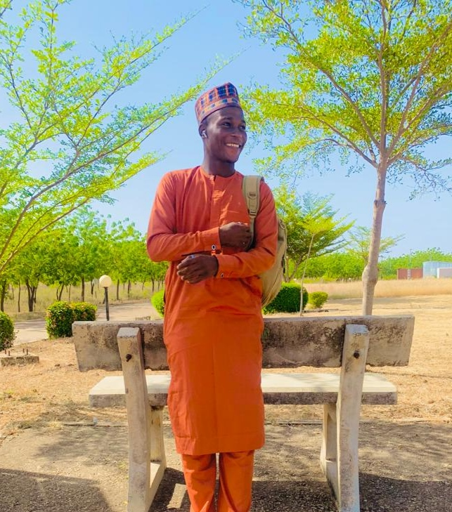

Abdul-Warith.O
Am a web Developer

- Summary : I want to help people to build and develop their works.
- Education : I obtain my Bachelor of Education (B.Ed) degree at Sokoto State University on 22nd of Jan, 2024.
- Work experience: Have worked as line manager of ZETEO CITADEL CONSULT for a perod of one and half year.
- SKils: Have being managing,coordinating, directing of both human and material resources in the organization.